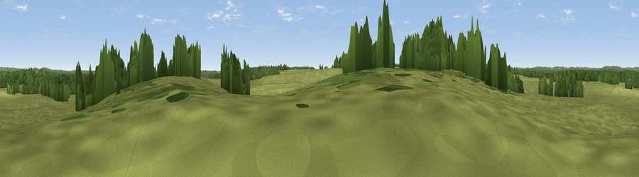

Holm Hill
#44089 in England · top 84% of its area beats it · near BrockenhurstThe view, rendered

A 360° render of this exact spot computed from the terrain model, tree cover and land cover — summer colours, afternoon light, calibrated against photographs of famous viewpoints. Real trees, hedges and buildings will differ in detail.
The panorama
Grey silhouette: terrain skyline in each direction (720 bearings, Earth curvature and refraction included). Dashed green: skyline with trees (+15 m) and buildings (+8 m) as obstacles. Blue strip: how far the ground is visible on each bearing.
Where the view opens
Wedge length = distance to the farthest visible ground on that bearing (vegetation-aware). Rings at 10, 25 and 50 km.
What fills the view
67% grassland · 33% woodland
Angular shares of the visible panorama (visual magnitude), not map area. Landscape diversity 0.29 (0–1 Shannon).
Key numbers
More beautiful places nearby
The staircase of upgrades: each row has a higher view potential than everything closer. Driving times are estimates from straight-line distance, calibrated against real road routing — check an actual route before setting out.
| Place | Direction | Drive | Score |
|---|---|---|---|
| Blackhamsley Hill | SE · 3 km | ~8 min | 32.9 |
| Viewpoint near Burley | W · 6 km | ~13 min | 41.0 |
| Viewpoint near Emery Down | NNE · 7 km | ~14 min | 44.9 |
| Viewpoint near Highcliffe-on-Sea | SSW · 10 km | ~20 min | 46.0 |
| Viewpoint near Bramshaw | N · 13 km | ~25 min | 46.6 |
| Viewpoint near Holdenhurst | WSW · 14 km | ~25 min | 47.0 |
| Viewpoint near Holdenhurst | WSW · 14 km | ~25 min | 49.2 |
| Viewpoint near Hurn | WSW · 14 km | ~25 min | 53.7 |
50.82088, -1.63155 · source: osm peak · position refined by local search. Computed location — check access rights before visiting.